Consulta la cartelera de eventos de la Universidad Tecnológica de Pereira: próximos y más solicitados, con su detalle y actividades.
El módulo de Eventos cuenta con:
Pestañas Próximos y Más solicitados
Búsqueda por evento y filtro por fechas
Detalle del evento: tipo, fechas, lugar y encargado
Actividades de cada evento
Mis eventos más recientes en la pantalla principal
La cartelera se puede consultar sin iniciar sesión; para ver tus eventos debes loguearte en la aplicación
EVENTOS · PORTAL Y MIS EVENTOS
Portal de Eventos1 de 6
Aquí ves tus eventos recientes y los próximos de la universidad; más abajo, los más solicitados. Desliza cada fila para ver más.
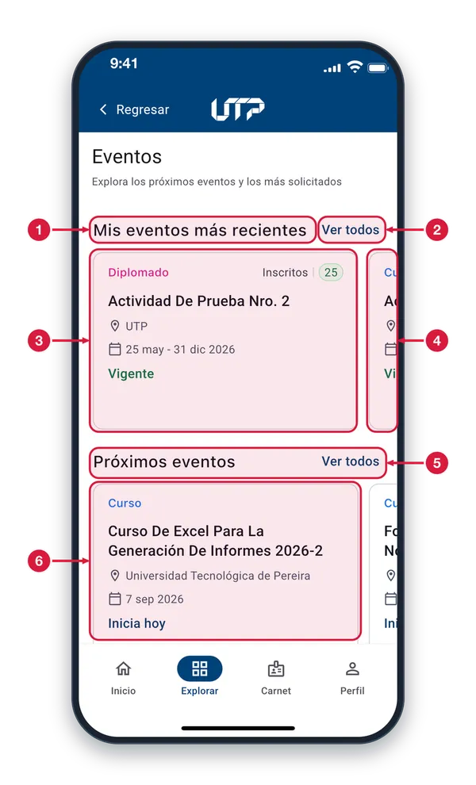
Mis eventos más recientes Título de la fila con los últimos eventos en los que te inscribiste.
Ver todos Toca «Ver todos» para abrir Mis Eventos, con la lista completa de los eventos en los que te inscribiste.
Tarjeta de evento Muestra el tipo de actividad, los inscritos, el nombre, el lugar, las fechas y el estado (por ejemplo, «Vigente»). Tócala para abrir el detalle del evento.
Más eventos El borde de la siguiente tarjeta indica que hay más eventos. Desliza la fila hacia la izquierda para verlos.
Próximos eventos Eventos abiertos de la universidad, por cercanía de fecha. Toca «Ver todos», a la derecha, para abrir la Cartelera en la pestaña Próximos.
Tarjeta de próximo evento Funciona igual que las anteriores. La línea en azul, como «Inicia hoy», indica cuánto falta para que empiece. Tócala para ver su detalle.
Mis Eventos2 de 6
Consulta todos los eventos en los que te inscribiste y encuentra el que buscas con el buscador, las pestañas y el filtro por fecha.
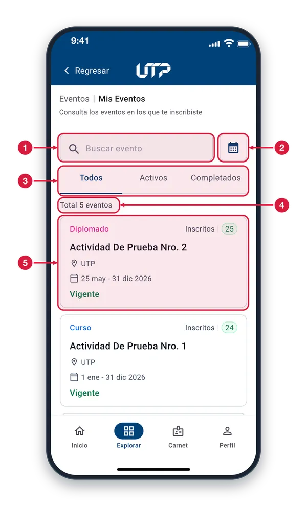
Buscar evento Escribe parte del nombre, del tipo o del lugar del evento y la lista se filtra mientras escribes.
Filtro por fecha Toca el calendario para elegir un rango de fechas y ver solo los eventos de ese periodo.
Pestañas de estado Elige qué ver: Todos, Activos (vigentes) o Completados (ya terminaron). La pestaña subrayada es la que está activa.
Total de eventos Cuenta los eventos de la lista con el filtro actual. Cambia cuando buscas, cambias de pestaña o filtras por fecha.
Tarjeta de evento Muestra tipo, inscritos, nombre, lugar, fechas y estado. Toca una tarjeta para abrir el detalle del evento y tu QR de asistencia. Las demás funcionan igual.
Pestaña Activos3 de 6
La pestaña Activos deja en la lista solo los eventos vigentes en los que estás inscrito.
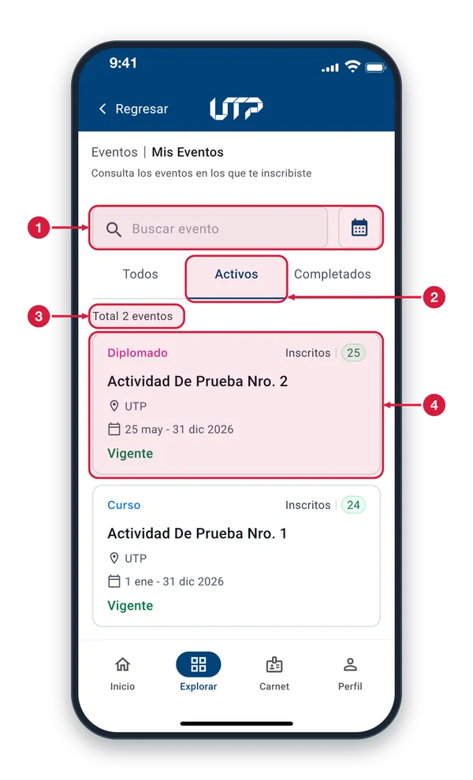
Buscador y calendario Puedes combinar la pestaña con el buscador (nombre, tipo o lugar) y con el filtro por fecha para afinar la lista.
Pestaña Activos Toca «Activos» para ver solo los eventos vigentes. Queda subrayada. Toca «Todos» para volver a ver toda la lista.
Total de eventos El contador se ajusta a la pestaña: aquí solo cuenta los eventos activos.
Evento vigente Los eventos activos llevan el estado «Vigente» en verde. Toca una tarjeta para abrir su detalle y tu QR de asistencia.
Pestaña Completados4 de 6
La pestaña Completados muestra los eventos que ya terminaron, para que consultes tu historial.
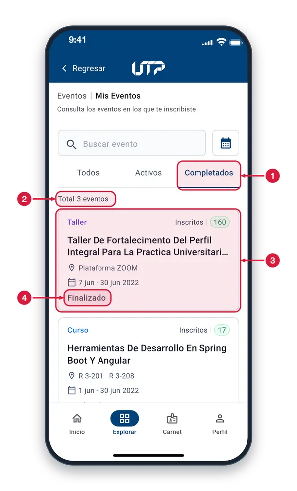
Pestaña Completados Toca «Completados» para ver solo los eventos que ya terminaron. Si no tienes ninguno, aparece un aviso en lugar de la lista.
Total de eventos Cuenta solo los eventos completados. Cambia si buscas o filtras por fecha.
Tarjeta de evento terminado Muestra tipo, inscritos, nombre, lugar y fechas. Toca la tarjeta para abrir su detalle. Las demás tarjetas funcionan igual.
Estado Finalizado «Finalizado» indica que el evento ya terminó; en los eventos en curso aparece «Vigente».
Detalle del evento5 de 6
Aquí ves la información del evento y tu código QR para registrar la asistencia.
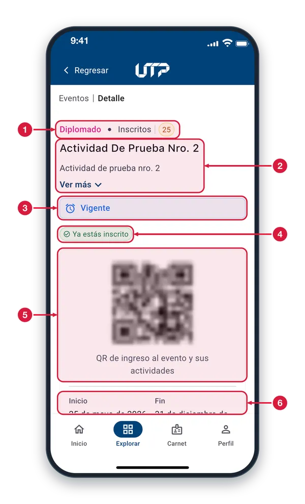
Tipo e inscritos Indica el tipo de actividad (por ejemplo, Diplomado) y cuántas personas están inscritas en el evento.
Nombre y descripción Muestra el nombre del evento y un resumen de su descripción. Toca «Ver más» para leerla completa y «Ver menos» para recogerla.
Estado del evento Recuadro azul con el estado del evento. «Vigente» indica que está en curso.
Ya estás inscrito Confirma que tu inscripción en este evento ya está registrada.
Código QR personal Es tu código QR. Muéstralo a quien registra la asistencia para que lo escanee y quede marcada tu presencia en el evento y en sus actividades.
Fechas de inicio y fin Indica cuándo empieza y cuándo termina el evento. Desliza hacia arriba para ver más información, como las sesiones del evento.
QR de asistencia6 de 6
Tu QR es personal: sirve para registrar tu asistencia al evento y a sus actividades. Muéstralo cuando te lo pidan.
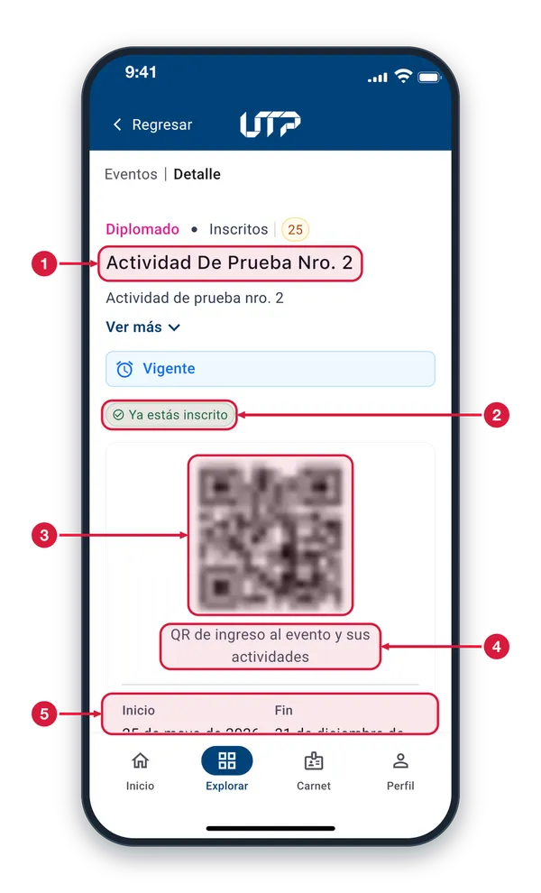
Nombre del evento Comprueba que estás en el evento correcto antes de mostrar el QR.
Ya estás inscrito Confirma que tu inscripción en este evento está registrada.
Código QR Este código te identifica a ti, no al evento. Quien registra la asistencia lo escanea con la app y queda anotada tu presencia.
Leyenda del QR «QR de ingreso al evento y sus actividades»: el mismo código sirve para el evento y para cada una de sus actividades.
Fechas de inicio y fin Cuándo empieza y cuándo termina el evento. Desliza hacia arriba para ver más datos.
EVENTOS · CARTELERA Y FILTROS
Cartelera de eventos1 de 7
La cartelera reúne los eventos abiertos de Extensión. Busca, filtra por fecha y elige uno para ver su detalle.
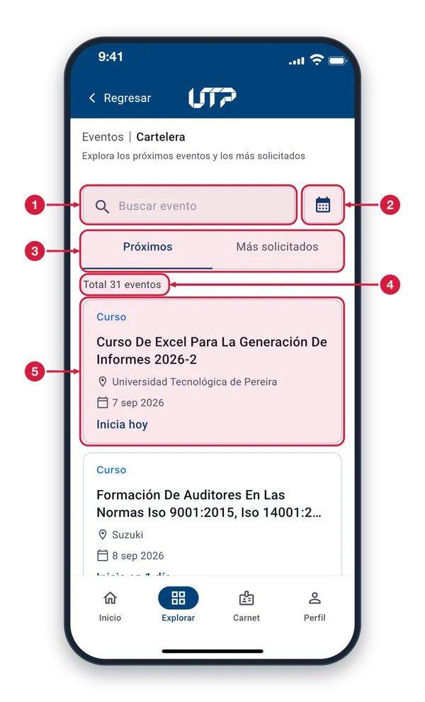
Buscar evento Escribe parte del nombre, del tipo o del lugar del evento y la lista se filtra mientras escribes.
Filtro por fecha Toca el calendario para elegir un rango de fechas y ver solo los eventos que empiezan en ese periodo.
Próximos / Más solicitados «Próximos» ordena por cercanía de fecha y «Más solicitados» por número de inscritos. La pestaña subrayada es la activa.
Total de eventos Cuenta los eventos de la lista. Cambia si buscas, filtras por fecha o cambias de pestaña.
Tarjeta de evento Muestra tipo, nombre, lugar y fecha. La línea en azul, como «Inicia hoy», indica cuánto falta. Toca la tarjeta para ver el detalle del evento.
Eventos más solicitados2 de 7
En esta pestaña los eventos van ordenados por número de inscritos, de mayor a menor, para que veas los más populares.
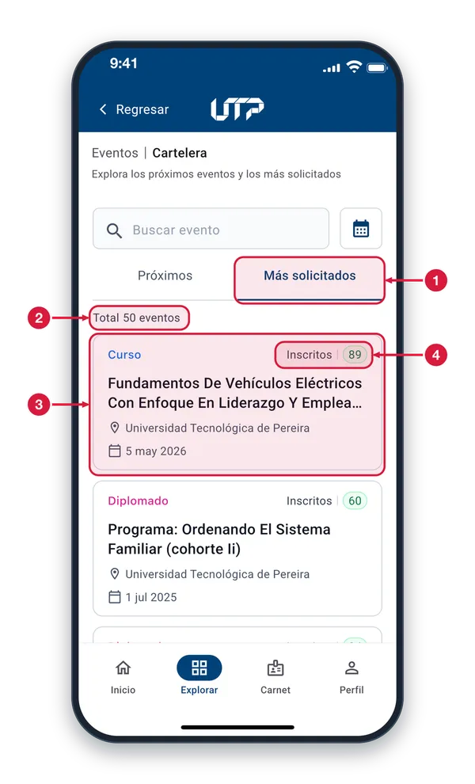
Pestaña Más solicitados Toca «Más solicitados» para ordenar por inscritos. Toca «Próximos» para volver al orden por fecha.
Total de eventos Cuenta los eventos de esta pestaña y se ajusta si buscas o filtras por fecha.
Tarjeta de evento Muestra tipo, inscritos, nombre, lugar y fecha. Toca la tarjeta para ver el detalle del evento. Las demás funcionan igual.
Número de inscritos Cantidad de personas inscritas en el evento. Con este número se ordena la lista: arriba van los que tienen más inscritos.
Filtro por fecha3 de 7
El calendario te permite elegir un rango de fechas para ver solo los eventos de ese periodo.
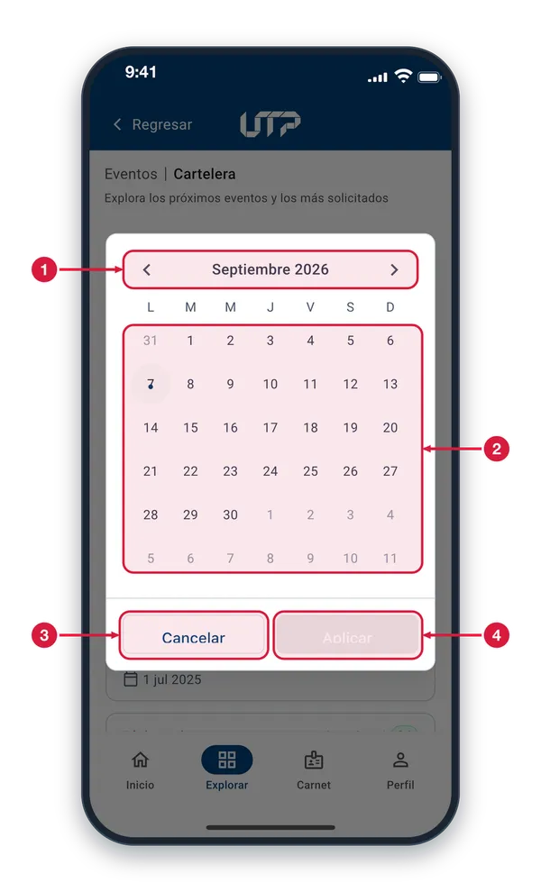
Mes y flechas Muestra el mes que estás viendo. Toca la flecha izquierda para ir al mes anterior y la derecha para ir al siguiente.
Días del mes Toca el primer día del rango y luego el último. Si tocas un solo día, filtras solo ese día. Hoy aparece marcado con un punto; los días en gris son de otros meses.
Cancelar Cierra el calendario sin cambiar el filtro y vuelves a la lista de eventos.
Aplicar Aplica el rango elegido. Está en gris mientras no hayas seleccionado las fechas; cuando las eliges se activa.
Rango de fechas seleccionado4 de 7
Cuando eliges el primer y el último día, el rango queda sombreado y puedes aplicarlo.
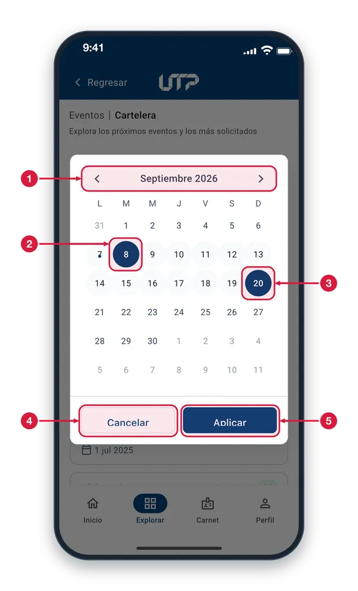
Mes y flechas Usa las flechas para cambiar de mes si el rango que necesitas está en otro mes.
Primer día del rango Día de inicio que tocaste primero, resaltado en azul oscuro.
Último día del rango Día final que tocaste después, también en azul oscuro. Los días intermedios quedan sombreados. Para empezar de nuevo, toca otro día.
Cancelar Cierra el calendario sin aplicar el rango.
Aplicar Ahora está activo, en azul. Tócalo para filtrar la lista con el rango elegido.
Filtro por fecha aplicado5 de 7
Con el rango aplicado, la lista muestra solo los eventos de esas fechas y el filtro queda visible bajo el buscador.
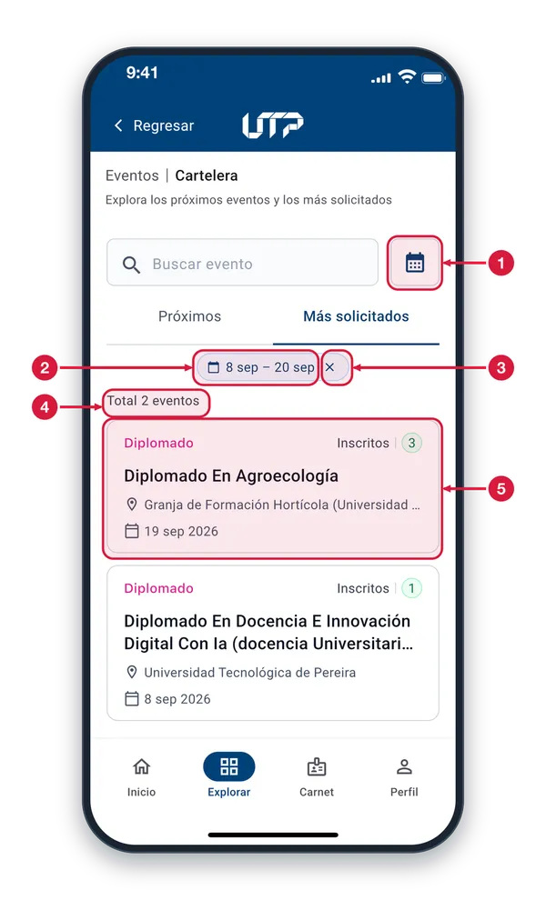
Filtro por fecha Vuelve a tocar el calendario si quieres elegir otro rango.
Rango aplicado Muestra las fechas del filtro activo, aquí del 8 al 20 de septiembre. Tocar este texto no hace nada.
Quitar el filtro (✕) Toca el aspa para quitar el rango y volver a ver todos los eventos de la pestaña.
Total de eventos Se ajusta al filtro: cuenta solo los eventos dentro del rango.
Eventos del rango La lista solo trae los eventos que empiezan dentro de las fechas elegidas. Toca una tarjeta para ver su detalle.
Sin conexión con el servidor6 de 7
Si falla la carga, cada fila avisa por separado y ofrece su propio botón «Reintentar». El resto de la pantalla sigue funcionando.
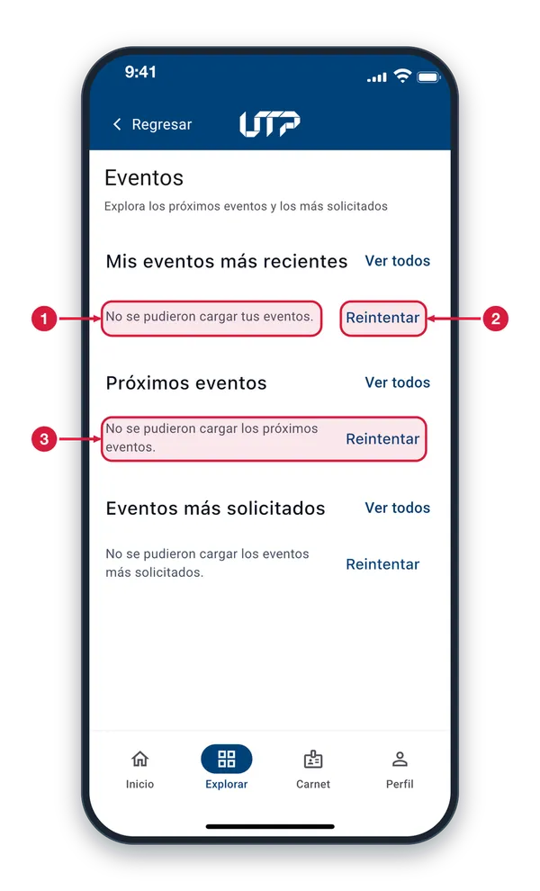
Aviso de error «No se pudieron cargar tus eventos» indica que esa fila no alcanzó a cargar. Revisa que tengas internet.
Reintentar Toca «Reintentar» para volver a cargar esa fila sin salir de la pantalla. Cuando carga, aparecen las tarjetas de eventos.
Otras filas con error Las filas «Próximos eventos» y «Eventos más solicitados» avisan igual y cada una tiene su «Reintentar». Reintenta la que falló; las demás no se ven afectadas.
Eventos cargados de nuevo7 de 7
Después de tocar «Reintentar» y con conexión, las filas cargan sus eventos otra vez, sin salir del portal.
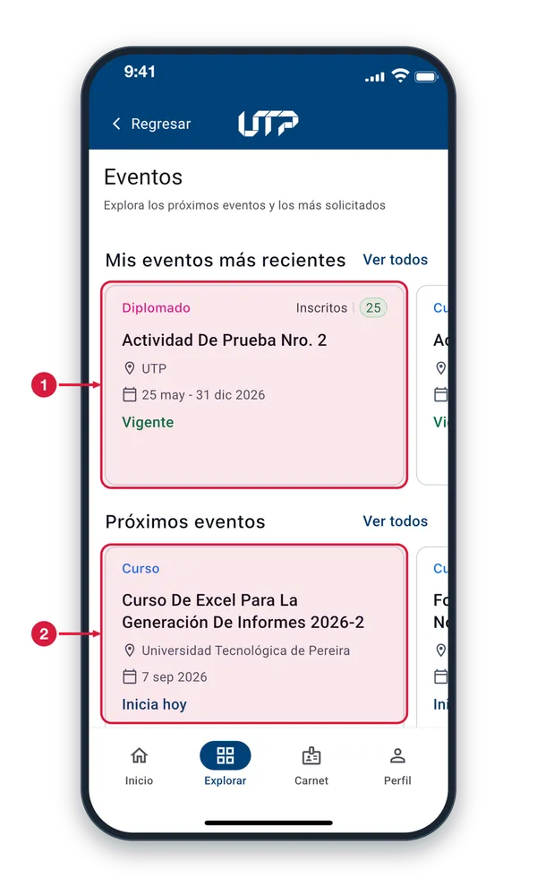
Tus eventos, de nuevo La fila «Mis eventos más recientes» vuelve a mostrar tus tarjetas. Tócalas para abrir el detalle o desliza para ver más.
Próximos eventos, de nuevo La fila «Próximos eventos» también se recuperó. Si alguna sigue fallando, toca su «Reintentar».